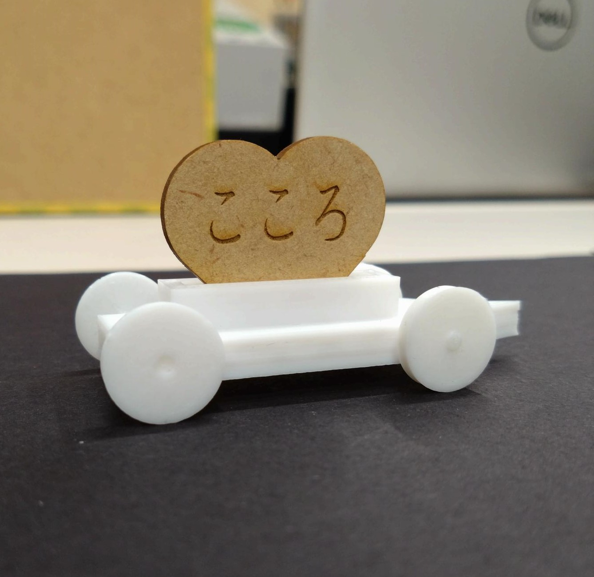
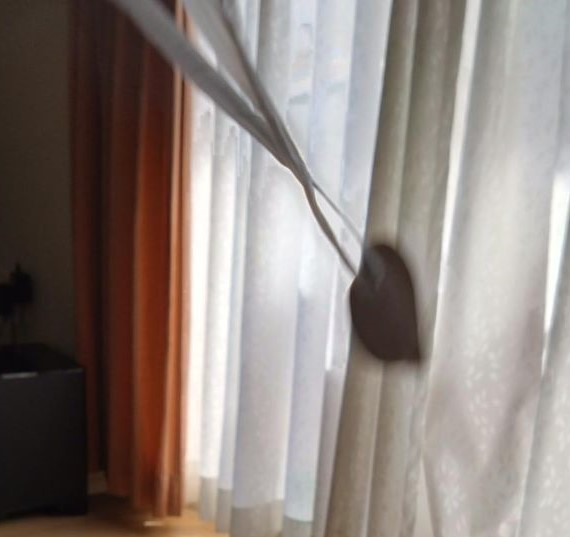
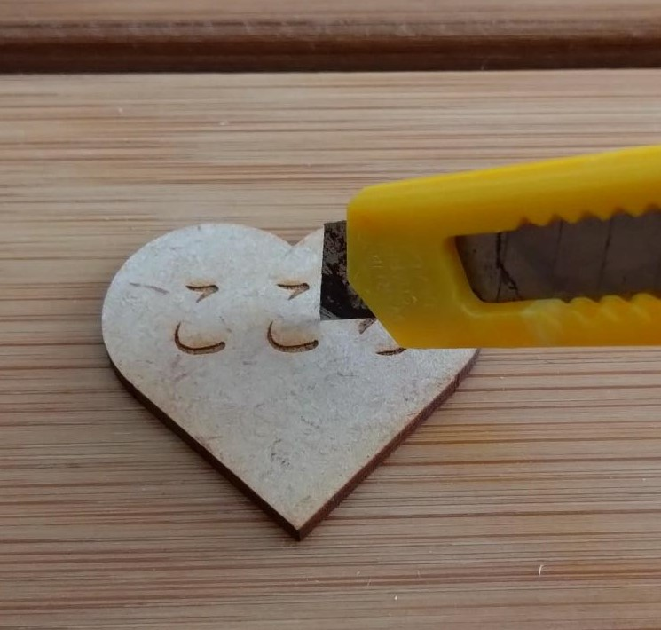
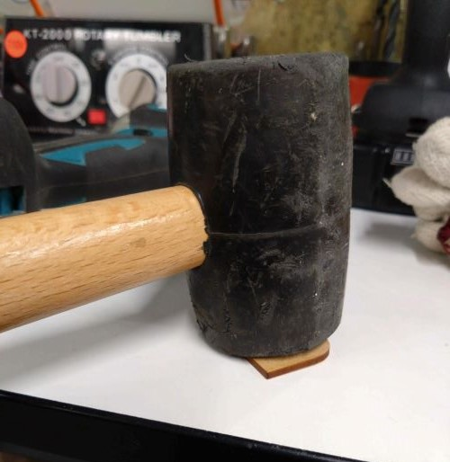
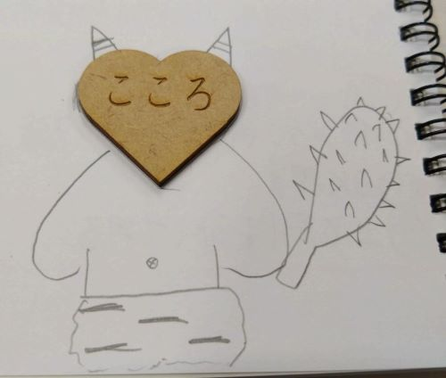
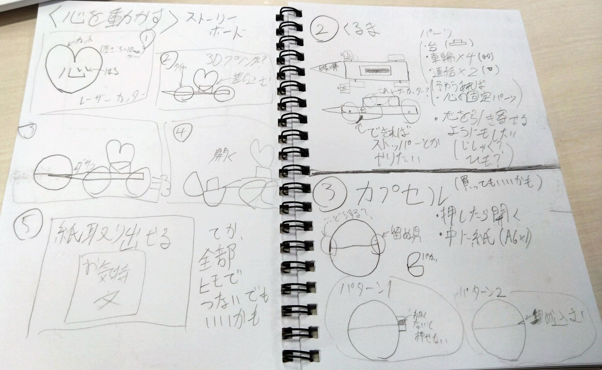

心を動かす何か
What is this?
これは「心」です。
これから「こころ」を使って心を動かしたいと思います。
実践
まず、一番オーソドックスな心の動かし方はこれです。

そう。心を車に乗せて動かします。
単純ですが、この方法を使えば誰でも心を動かすことができます。
この調子でドンドン心を動かしていこうと思います。
心が躍る

心を燃やす

心に刺さる

心を打つ

心を鬼にする

このように、心を様々な方法で動かすことができました。
これに加えて、皆さんの感情が少しでも動いたのならこの発明は真価を発揮します。
少しでも良いと思って頂けたら幸いです。
なぜこれを作ったのか
心の動かし方がこれしか思い浮かばなかったから
構成段階の色々
ストーリーボード、スケッチです。
本当は箱も作って車の先端で開けれるようにしたかったのですが、無理でした。
